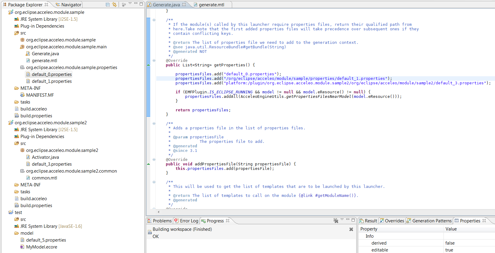

Acceleo Project where everything is contained
The Acceleo project can be created thanks to the new Acceleo project wizard available from the "File -> New -> Project..." menu. An Acceleo project is a Java project and an Eclipse plug-in project, as such an Acceleo project contains by default a source folder named "src" and a matching output folder named "bin". It is recommended to follow the naming convention of Eclipse plug-in projects to name your Acceleo project (ex: org.eclipse.acceleo.examples.uml2java) and the root package of the source files should use this project name (ex: org.eclipse.acceleo.examples.uml2java).
Inside the Acceleo project, the file used for the generation, which are named "modules", should be placed in the Java packages just like Java classes. This behavior is the default behavior of Acceleo wizards.
Module the files of the generator
An Acceleo generator is composed of several files named modules. A module is parameterized by the URIs of the meta-models instantiating the models that you want to generate code from. Here you can see a module parameterized by the URI of the Ecore meta-model.
[module moduleName('http://www.eclipse.org/emf/2002/Ecore')/]
An Acceleo module can extend another one in order to gain access to its public and protected elements. Acceleo modules contains two kind of elements: templates, that are generating the code, and queries, that are used to encapsulate complex expressions. Only single inheritance is supported in Acceleo.
[module moduleName('http://www.eclipse.org/emf/2002/Ecore') extends org::eclipse::acceleo::examples::uml2java::otherModule/]
A module can also imports other modules to access their public elements.
[module moduleName('http://www.eclipse.org/emf/2002/Ecore')/]
[import org::eclipse::acceleo:examples::uml2java::otherModule/]
It is recommended to use mostly "imports" and to keep "extends" for dynamic overriding which will be detailed below.
Template generating the code
Templates are the most used structure in Acceleo as they are used to directly generate the code. You can have a look at the basic signature of an Acceleo module with one template.
[module moduleName('http://www.eclipse.org/emf/2002/Ecore')/]
[template public genMyTemplate(aParam: EClass)]
[/template]
As you can see it, a template has a visibility (public | protected | private) with a scope similar to the visibility in object oriented programming languages. After the visibility, you can find the name of the template and its parameters. The parameters are declared following this convention "<name>: <type>". It is recommended to name your parameters with the following convention "a<Type>". The type of the parameter must be one of the following:
- Types provided by the meta-model (ex: Class, Property, Operation... for UML)
- Default types from OCL like Boolean, String, Integer, OclAny (common super-type of all concepts)
Inside of a template you can use two kind of expressions to generate the code, first, static expressions that will be generated without any transformations and Acceleo expressions that will use model elements to compute the generate text.
[module moduleName('http://www.eclipse.org/emf/2002/Ecore')/]
[template public genMyTemplate(aParam: EClass)]
this is a static piece of code
[aParam.name/]
[/template]
In the previous example, you can see the static piece of code and the Acceleo expression that will generate some text by using the name of the instance of EClass passed as an argument during the execution of the generator.
A template can also have a guard that will make sure that the template is executed only if the guard is validated.
[module moduleName('http://www.eclipse.org/emf/2002/Ecore')/]
[template public genMyTemplate(aParam: EClass) ? (not aParam.isAbstract)]
[/template]
A template can also have a post condition that will be executed on the result of the execution of the template. You can for example, trim the result of the execution of the template easily.
[module moduleName('http://www.eclipse.org/emf/2002/Ecore')/]
[template public genMyTemplate(aParam: EClass) post(trim())]
[/template]
A template can also let you initialize new variable in order to create a richer context.
[module moduleName('http://www.eclipse.org/emf/2002/Ecore')/]
[template public genMyTemplate(aParam: EClass) {aName: String = aParam.name; abstract: Boolean = aParam.isAbstract;}]
[/template]
Finally, a template can also override another template if this template is coming from a module extended by the current module.
[module moduleName('http://www.eclipse.org/emf/2002/Ecore') extends org::eclipse::acceleo::examples::uml2java::otherModule/]
[template public genMyTemplate(aParam: EClass) overrides myTemplate]
[/template]
Overriding in Acceleo does not behave in the same way as it does in most object oriented programming (Acceleo is not object oriented). If a module A imports a module B that extends C and if the module C defines a template tC overridden in the module B and the module C also defines a template tC1 that calls tC. If from the module A we are calling tC1, in Java and in most object oriented programming this call to tC1 would call tC in the module B since it is overridden and even if tC1 is only located in the module C we are still in the context of a module B but in Acceleo the overriding mechanism does not provide additional dispatch. It only ensure that if two templates are accessible and if one override the other, the overriding one is called. The overriding mechanism should mainly be used for dynamic overriding (explained later).
Main template
A main template is an entry point of the generation, it is characterized by the presence of the comment "@main" in its body.
[module moduleName('http://www.eclipse.org/emf/2002/Ecore')/]
[template public genMyTemplate(aParam: EClass)]
[comment @main/]
[aParam.doSomething()/]
[/template]
The presence of this comment will make Acceleo generate a Java class in order to start the generation with this template. The Acceleo wizards let you create a new module with a main template if you want. If you want to "transform" a template to a main template, you just need to add this comment. If you remove it, the Java class generated will not be synchronized with the Acceleo module anymore so if you change the name of the template and try to use the Java launcher again, it will not work.
We will try to launch the generation of your template on all model elements that are matching the type required by the parameter of your main template, in the previous example where the main template requires an instance of "EClass", we will navigate in the whole model to find all the available "EClass" to use them as argument. While powerful, this mechanism is not without any impacts on the performances of the generation. We recommend that you use as the type of the parameter of your main template the type of the root element of your models. In the case of a module defined for the meta-model Ecore, we would use the concept EPackage and transform the previous module in the following module
[module moduleName('http://www.eclipse.org/emf/2002/Ecore')/]
[template public genMyTemplate(aParam: EPackage)]
[comment @main/]
[aParam.eAllContents(EClass).doSomething()/]
[/template]
You can define multiple main templates in one or several modules if you want even if we recommend to only have one main template defined on the type of the root of your models.
Generating Files
Some templates can use the "file block" to generate files.
[module randomJavaFile('http://www.eclipse.org/emf/2002/Ecore')/]
[template public genRandomJavaFile(aParam: EPackage)]
[file ('myFile.java', false, 'UTF-8')]
Hello World
[/file]
[/template]
The file block contains three parameters:
- An expression returning a string for the name of the file
- A boolean indicating if existing files should be overwritten or if the newly generated content should be appended at the end of the existing file
- The encoding of the file
The expression computing the name of the file can be a static string ('myFile.txt'), or a more complex expression using model elements (aParam.name + '.txt') or even the result of a template or a query (returning a string). We do recommend to use a template to define the name of the file as you even need to make references from one file to the other and being able to use a template to calculate the path of a file generated for a given object can help.
[module randomJavaFile('http://www.eclipse.org/emf/2002/Ecore')/]
[template public genRandomJavaFile(aParam: EPackage)]
[file (aParam.genRandomJavaFilePath(), false, 'UTF-8')]
Hello World
[/file]
[/template]
[template public genRandomJavaFilePath(aParam: EPackage)]
src/[aParam.genPackagePath()/]/[aParam.name.toUpperFirst()/].java
[/template]
The second parameter of the file block is a boolean determining if existing files should be overwritten. If set to false (default behavior) existing files will be overwritten, if set to true, the content will be generated at the end of the existing file.
We are strongly recommending to only have one template generating a file in a given module as we recommended to have one module to generate one kind of file. This does not mean, that you should have one module to generate all Java files but you should separate your modules to keep your domain separated and have something like this:
- org::eclipse::acceleo::module::sample::main::mainModule
- org::eclipse::acceleo::module::sample::files::userInterfaceJavaFile
- org::eclipse::acceleo::module::sample::files::databaseAdapterJavaFile
- org::eclipse::acceleo::module::sample::files::controllerfaceJavaFile
- org::eclipse::acceleo::module::sample::files::defaultPropertiesFile
- org::eclipse::acceleo::module::sample::files::adminJsFile
We recommended that you follow this naming convention for the name of your modules generating files: "<goal><extension>File". With this convention it is easier for newcomers to help you maintain and use your generator since it is easy to figure out what is generated by a given module.
Structures
Acceleo templates can use Acceleo expressions to manipulate model elements. Acceleo expressions are based on a superset of the OCL language. In order to improve the development of Acceleo generators, Acceleo templates can contain several kinds of structures.
If
Acceleo template can use if blocks to specify blocks of code that should be executed only if a given condition is fulfilled.
[module moduleName('http://www.eclipse.org/emf/2002/Ecore')/]
[template public genMyTemplate(aParam: EClass)]
[if (aParam.isAbstract)]
[elseif(not aParam.isAbstract)]
[else]
[/if]
[/template]
For
A for block is also available to iterate on collections.
[module moduleName('http://www.eclipse.org/emf/2002/Ecore')/]
[template public genMyTemplate(aParam: EClass)]
[for (anAttribute: EAttribute | aParam.eAllAttributes())]
[anAttribute.name/]
[/for]
[/template]
For blocks can also define a separator to generate code between each iterations and a prefix and suffix.
[module moduleName('http://www.eclipse.org/emf/2002/Ecore')/]
[template public genMyTemplate(aParam: EClass)]
[for (anAttribute: EAttribute | aParam.eAllAttributes()) before('prefix') separator(', ') after('suffix')]
[anAttribute.name/]
[/for]
[/template]
For blocks are also defining a variable named "i". This variable is the iterator of the block. This variable is only accessible in the body of the for block and in the separator expression. In the body expression, this variable would always have the value "1" and in the after expression, the value would always be the size of the expression initializing the iteration. Since this variable is representing the index of the element in the collection initializing the iterator of the loop, its value will always start at 1.
[module moduleName('http://www.eclipse.org/emf/2002/Ecore')/]
[template public genMyTemplate(aParam: EClass)]
[for (anAttribute: EAttribute | aParam.eAllAttributes())]
Name: [anAttribute.name/] Index: [i/]
[/for]
[/template]
Let
A let block can let you define a variable inside of your template.
[module moduleName('http://www.eclipse.org/emf/2002/Ecore')/]
[template public genMyTemplate(aParam: EClass)]
[let anAttribute : EAttribute = aParam.eAllAttributes()->first()]
[anEAttribute.name/]
[/let]
[/template]
The let block is only executed if and only if the result of the expression, here "aParam.eAllAttributes()->first()" can be affected to the initialization variable, here "anAttribute : EAttribute". To test several possibilities, you can use elselet blocks
[module moduleName('http://www.eclipse.org/emf/2002/Ecore')/]
[template public genMyTemplate(aParam: EClass)]
[let anAttribute : EAttribute = aParam.eAllAttributes()->first()]
[elselet aReference : EReference = aParam.eAllReferences()->first()]
[else]
[/let]
[/template]
Query encapsulating utility expressions
Queries are used to define complex expressions that can be used quickly at several locations in the generator.
[module moduleName('http://www.eclipse.org/emf/2002/Ecore')/]
[query reqMyQuery(aParam: EClass) : String = aParam.name/]
The result of a query is stored in a cache, this way you can call several time the same query with the same parameters and the result will be only computed once.
Additional Concepts elements to improve your generator
Acceleo features other mechanisms like dynamic overriding, properties files or even the ability to call Java services.
Dynamic Overriding
Acceleo let you register a generator that can dynamically override an existing generator, with this mechanism you can change the behavior of an already deployed generator without any changes to this generator. In order to override dynamically a template, follow those steps:
- create a new generator
- add the original generator as a dependency in the dependencies tab of the MANIFEST.MF
- create a new module extending a module from the original generator
- overrides one of its template
- open the MANIFEST.MF go to the extension tab and add an extension using the extension point "org.eclipse.acceleo.engine.dynamic.templates"
- Click on the browse button and select your source folder (src) or a subfolder if you don't want to use all the modules from your new generator
- Right click on the label "org.eclipse.acceleo.engine.dynamic.templates" and add a "generator"
- Enter the plug-in ID of the generator that you want to override dynammically here (ex: org.eclipse.acceleo.examples.uml2java)
- Deploy the new generator in the Eclipse instance containing the old one and your done
Properties Files
Properties files are standard Java ".properties" files that can be loaded by an Acceleo generator to customize a generation. In order to use a properties file in your generator, you have to reference it in the method "getProperties()" of your Java launcher and then to use the loaded properties in your generator.
In the method "getProperties()", you have to return a collection of the path of the properties files that you want to use. There are four ways to referenced a properties files:
{kind=link}
- You can just return the name of the properties files, example: "default_0.properties". With this, Acceleo will look for any file named default_0.properties in the generator and load the properties from the first file found with this name.
- You can also enter the path of a specific properties file located in your generator, example: "/org/eclipse/acceleo/module/sample/properties/default_1.properties". With this path, Acceleo will look for a properties files with the name "default_1.properties" in the folder "/org/eclipse/acceleo/module/sample/properties/" in your generator.
-
You can also referenced a properties files located in another Eclipse plugin by using the url of the properties files
in the other plugin. In order to do that, you need to construct the path with the following convention:
"platform:/plugin/
/ ". Example: "platform:/plugin/org.eclipse.module.sample2/org/eclipse/acceleo/module/sample2/default_3.properties". The other plugin needs to be deployed in Eclipse or it needs to be a dependency of the first generator. - Finally, you can also use an absolute path in the filesystem as a reference to a properties file. Example: "C:\Users\sbegaudeau\Desktop\default_4.properties". You can also use the utility method org.eclipse.acceleo.engine.utils.AcceleoEngineUtils#getPropertiesFilesNearModel to compute the absolute path of the properties files in the same folder as the model. With this method, we can have the path of the file default_5.properties.
In order to use a properties files located in an Eclipse plugin (all Acceleo generators are Eclipse plugins) you have to make sure that the file is included in the build of your generator, by either placing it in a source folder or by adding it to your build in the build.properties file located at the root of your generator.
Now that you know how to load a properties file, you need to use it in your generator. In order to do that, you can use one of the four following operations:

- "getProperty('myProperty')" will return the value of the property with the key "myProperty". Several properties files can have properties that share the same key, only the first one found will be returned with this method.
- "getProperty('default_1.properties', 'myProperty')" will return the value of the property with the key "myProperty" from the file "default_1.properties").
- "getProperty('myProperty', Sequence{'my name'})" will return the value of the property with the key "myProperty" parameterized with the value in the sequence.
- "getProperty('default_3.properties', 'myProperty', Sequence{'my name'})" will return the value of the property with the key "myProperty" parameterized with the value in the sequence from the file "default_3.properties".
You can see the result of the generation in the following screenshot.

Java Services
You can call Java services from a template or a query, yet calling them from queries is recommended. Here is an example of a call to a Java service from a query.
[module moduleName('http://www.eclipse.org/emf/2002/Ecore')/]
[query reqMyQuery(aParam: EClass) : String =
invoke('org.eclipse.acceleo.examples.uml2java.MyJavaClass', 'myMethod(org.eclipse.emf.ecore.EClass)', Sequence{aParam})
/]
You can see that we will call the operation "myMethod" from the class "MyJavaClass" with the argument "aParam".
If your Java service is returning a collection, the return type of your query should match the type of the return type of
your collection. We are recommending that in the case of a Java service returning an ArrayList